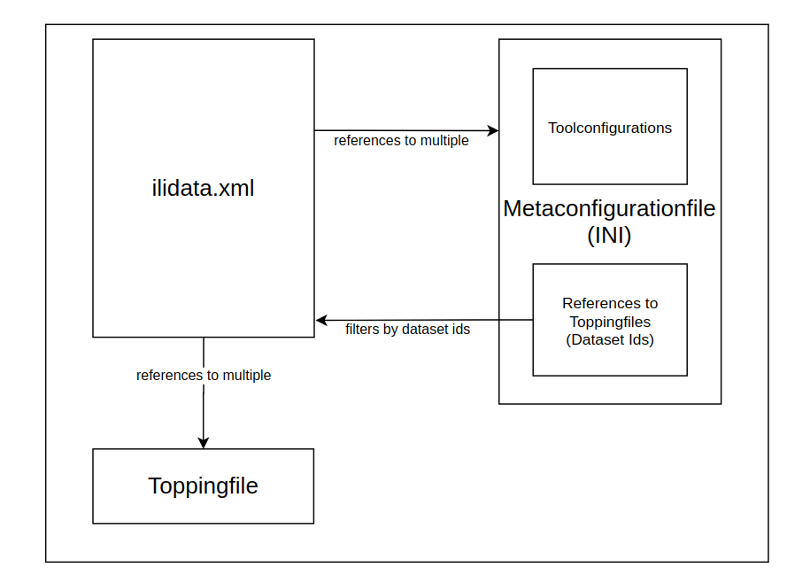

Technisches Konzept
Das Konzept der Toppings ist nicht nur an Model Baker gebunden. Dieses Kapitel erklärt hier, wie die grundlegende Funktionalität mit der repositoryübergreifenden Suche nach Zusatzinformationen funktioniert.
So wie wir jetzt INTERLIS-Modelle finden können, indem wir die ilimodels.xml-Datei von models.interlis.ch und den verlinkten Repositories durchsuchen, können wir Zusatzinformationen über die Datei ilidata.xml finden.
Note
Der Einstiegspunkt für Model Baker ist nicht models.interlis.ch, sondern models.opengis.ch, das wiederum auf models.interlis.ch verlinkt.
Einstellungens für Tools (wie ili2db oder Model Baker) werden in einem Metakonfigurationsfile konfiguriert, ebenso wie Links zu Toppingfiles, die Informationen zu GIS Projektes enthalten (wie zBs. Symbologien oder Legendensturkturen). Somit bestehen Zusatzinformationen meistens aus einer Metakonfiguration und beliebig vielen Toppings.

Das ilidata.xml
Ein ilidata.xml dient als Index für alle benötigten Zusatzinformationen. Das File basiert auf dem Modell DatasetIdx16.
Es enthält die Klasse bzw. die Elemente DatasetMetadata. Darin wird auf Files referenziert, die auf demselben Server/Repository liegen, wie das ilidata.xml .
Weitere Server/Repositories können über das ilisite.xml verbunden werden. Die DatasetMetadata werden anhand einer systemübergreifenden (repository-übergreifenden) DatasetMetadata-Id identifiziert. Es ist den Benutzer:innen überlassen, wie diese Id lautet.
Beispiel eines DatasetMetadata Elements
<DatasetIdx16.DataIndex.DatasetMetadata TID="be6623c1-aa64-4a07-931e-fc4f0745f025">
<id>ch.opengis.ili.config.KbS_LV95_V1_4_config_V1_0</id>
<version>2021-01-06</version>
<owner>mailto:david@opengis.ch</owner>
<title>
<DatasetIdx16.MultilingualText>
<LocalisedText>
<DatasetIdx16.LocalisedText>
<Language>de</Language>
<Text>Einfaches Styling und Tree (OPENGIS.ch)</Text>
</DatasetIdx16.LocalisedText>
</LocalisedText>
</DatasetIdx16.MultilingualText>
</title>
<categories>
<DatasetIdx16.Code_>
<!-- dieser Eintrag betrifft das Modell KbS_LV95_V1_4 -->
<value>http://codes.interlis.ch/model/KbS_LV95_V1_4</value>
<!-- Konvention: http://codes.interlis.ch/model/{MODELNAME} -->
</DatasetIdx16.Code_>
<DatasetIdx16.Code_>
<!-- dieser Eintrag betrifft eine Metakonfigurationsdatei -->
<value>http://codes.interlis.ch/type/metaconfig</value>
<!-- fix Wert fuer Metaconfigs -->
</DatasetIdx16.Code_>
<DatasetIdx16.Code_>
<!-- Codes können auch generisch sein -->
<value>http://codes.modelbaker.ch/preferredDataSource/gpkg</value>
<!-- müssen aber eine URL sein -->
</DatasetIdx16.Code_>
</categories>
<files>
<DatasetIdx16.DataFile>
<fileFormat>text/plain</fileFormat>
<file>
<DatasetIdx16.File>
<path>metaconfig/opengisch_KbS_LV95_V1_4.ini</path>
<!-- realtiver Pfad (zu ilidata.xml) der Metaconfig Datei -->
</DatasetIdx16.File>
</file>
</DatasetIdx16.DataFile>
</files>
</DatasetIdx16.DataIndex.DatasetMetadata>
Filterung
Das Element categories in den DatasetMetadata enthält eine Liste von Code_-Elementen. Diese können zum Filtern verwendet werden. Im Kontext der Toppings werden hauptsächlich die folgenden zwei Kategorien verwendet.
Modell
Die Kategorie für das Modell wird mit dem Prefix http://codes.interlis.ch/model/ identifiziert und enthält den Modell-Namen.
<DatasetIdx16.Code_>
<value>http://codes.interlis.ch/model/KbS_LV95_V1_4</value>
</DatasetIdx16.Code_>
Type
Die Kategorie für den File-Typ wird mit dem Prefix http://codes.interlis.ch/type/ identifiziert und enthält den betreffenden Typen.
<DatasetIdx16.Code_>
<value>http://codes.interlis.ch/type/metaconfig</value>
</DatasetIdx16.Code_>
In der Toppings-Implementierung des Model Bakers werden die folgenden Typen genutzt:
- metaconfig, um zu beschreiben, dass es sich um ein Metakonfigurationsfile handelt.
- metaattributes, um zu beschreiben, dass es sich um eine Metaattributdatei handelt, die in TOML oder INI geschrieben ist.
- sql, um zu beschreiben, dass es ein SQL Query File ist, das verwendet werden kann bei der Erstellung der Datenbank
- projecttopping, um zu beschreiben, dass es sich um ein Toppingfile handelt, das eine QGIS-Projekteinstellung definiert (beinhaltet die vollständige Layertree-Implementierung und ersetzt diese)
- layerstyle, um zu beschreiben, dass es sich um ein Toppingfile handelt, das Styling- und Formularkonfigurationen für einen QGIS-Layer enthalten kann, geschrieben in QML
- layerdefinition, um zu beschreiben, dass es sich um ein Toppingfile handelt, das die Definition eines QGIS-Layers enthalten kann, geschrieben in QLR
- referenceData, um zu beschreiben, dass es sich um ein Datenfile (zBs. ein Transferfile oder ein Katalog) handelt
Generisch
Allerdings ist der Inhalt des Code_ Elements nicht definiert. Solange es sich um eine URL handelt, ist den Toolentwickler:innen überlassen, wie sie es verwenden möchten.
Im Moment verwendet Model Baker eine generische Kategorie, um zu wissen, für welche Datenquelle dieses Topping gemacht ist:
http://codes.modelbaker.ch/preferredDataSource, waspgundgpkgsein kann.
Das ilisite.xml
Das ilisite.xml basiert auf dem Modell IliSite09. Es enthält die Klasse (Element) SiteMetadata wo URLs zu anderen Repositories definiert sind, Diese Repositorien bewirtschaften wiederum ein ilimodel.xml oder - ebenso - ein ilidata.xml.
Somit können Modelle über mehrere Repositories gefunden werden und genauso auch Metakonfigurationsfiles und/oder Toppingfiles.
Beispiel eines IliSite09 elements
<IliSite09.SiteMetadata.Site TID="1">
<Name>usability.opengis.ch</Name>
<Title>Allgemeine metadaten für ili-modelle</Title>
<shortDescription>Weitere Sites dieses Repos</shortDescription>
<Owner>http://models.opengis.ch</Owner>
<technicalContact>mailto:david@opengis.ch</technicalContact>
<subsidiarySite>
<IliSite09.RepositoryLocation_>
<value>usabilitydave.signdav.ch</value>
</IliSite09.RepositoryLocation_>
</subsidiarySite>
</IliSite09.SiteMetadata.Site>
Das Metakonfigurationsfile (ini)
Ein Metakonfigurationsfile ist eine ini Datei, die Konfigurationen für ein oder mehrere Tools enthält. Ebenso kann im Metakonfigurationsfile auf Toppingfiles und andere zur Konfiguration gehörenden Files referenziert werden.
Dateireferenzen
Die Dateien werden entweder durch eine systemübergreifende DatasetMetadata-Id referenziert oder sie können durch einen statischen Dateipfad referenziert werden.
DatasetMetadata Id
Wenn eine Datei durch eine DatasetMetadata-Id referenziert wird, bedeutet das, dass die ilidata.xml repositoryübergreifend geparst werden, um die verlinkte Datei zu finden. Das bedeutet, dass die Metakonfiguration nicht nur Dateien auf demselben Repository/Server referenzieren kann. Präfix für DatasetMetadata-Ids ist ilidata:.
Es wird generell empfohlen, die DatasetMetadata-Id für eine Referenz auf eine Datei zu verwenden (anstelle des statischen Dateipfads).
Statischer Dateipfad
Statische Dateipfad-Links, die mit file: referenziert werden, können sowohl absolut als auch relativ sein. Es kann jedoch vom verwendeten Tool abhängen, worauf sich der Pfad bezieht. Daher sollte dies nur für Testzwecke verwendet werden.
Model Baker behandelt relative Pfade relativ zu sich selbst. ili2db hingegen relativ zum Verzeichnis, in dem ili2db gestartet wird.
[CONFIGURATION]
baseConfig=ilidata:remoteBaseConfigBasketId;ilidata:otherRemoteBaseConfigBasketId;path/otherBaseConfigLocalFile
org.interlis2.validator.config=ilidata:ilivalidatorConfigBasketId
qgis.modelbaker.projecttopping=ilidata:ch.opengis.config.KbS_LV95_V1_4_projecttopping
ch.interlis.referenceData=ilidata:ch.opengis.config.KbS_Codetexte_V1_4
[ch.ehi.ili2db]
defaultSrsCode = 2056
smart2Inheritance = true
strokeArcs = false
importTid = true
createTidCol = false
models = KbS_Basis_V1_4
preScript=ilidata:ch.opengis.config.KbS_LV95_V1_4_prescript
iliMetaAttrs=ilidata:ch.opengis.config.KbS_LV95_V1_4_toml
Zum Beispiel referenziert die Id ch.opengis.configs.KbS_LV95_V1_4_projecttopping eine DatasetMetadata, die einen Link zu einer yaml-Datei enthält, in der die Projekteinstellungen wie die Legendenstruktur definiert sind. Die Id ch.opengis.configs.KbS_LV95_V1_4_001 verweist auf ein DatasetMetadata-Element, das einen Link zu einer qml-Datei für QGIS-Style- und Formularkonfigurationen enthält.
Tool Prefix
Im Metakonfigurationsfile können Einträge mit einem Tool-Präfix markiert werden. ili2db verwendet zum Beispiel das Präfix ch.ehi.ili2db und Model Baker verwendet das Präfix qgis.modelbaker. Es ist jedoch dem Tool überlassen, welche Konfigurationen es verwendet. Das Präfix ch.interlis, das mit ch.interlis.referenceData zum Beispiel für die Referenz auf Datenfiles wie Kataloge oder Transferdatenfiles verwendet wird, wird sowohl von ili2db als auch von Model Baker verwendet.
Referenzen auf andere Metakonfigurationsfiles
Es ist konzeptionell auch möglich (obwohl noch nicht von Tools wie Model Baker implementiert), dass man von einem Metakonfigurationsfile auf andere Metakonfigurationsfiles mit dem Eintrag baseConfig verlinken kann. Somit wäre eine Art "Vererbung" der Konfiguration möglich.
Toppingfiles
Toppingfiles sind Dateien, die von der Metakonfiguration referenziert werden und die Konfigurationsinformationen eines GIS-Projekts enthalten. Sie können Formularkonfigurationen, Style-Attribute, Legendenanzeige und -reihenfolge sowie Kataloge, Transferdateien und andere Datenfiles sein. Für jedes Tool können individuelle Toppingfiles verwendet werden. Von einer einfachen Zip-Datei, die das gesamte Projekt enthält, bis hin zu einer sorgfältigen Zuordnung von Layer-Namen zu qml-Style-Dateien.
Beispiel eines Projecttoppingfiles (yaml) des Layertrees in QGIS
layertree:
- 'top-group':
group: true
checked: true
expanded: true
mutually-exclusive: true
mutually-exclusive-child: -1
child-nodes:
- 'geom punkt':
group: false
definitionfile: "ilidata:ch.opengis.topping.opengisch_KbS_LV95_V1_4_005"
- 'geom polygon':
group: false
checked: true
qmlstylefile: "ilidata:ch.opengis.topping.opengisch_KbS_LV95_V1_4_005"
- 'subgroup':
group: true
child-nodes:
- 'subsubgroup':
group: true
checked: true
child-nodes:
- 'baum':
group: false
checked: true
- 'subsubsubgroup':
group: true
checked: true
child-nodes:
- 'another layer':
group: false
checked: false
- 'layer in the subgroup':
group: false
checked: false
- "Map":
provider: "wms"
uri: "contextualWMSLegend=0&crs=EPSG:2056&dpiMode=7&featureCount=10&format=image/jpeg&layers=ch.bav.kataster-belasteter-standorte-oev_lines&styles=default&url=https://wms.geo.admin.ch/?%0ASERVICE%3DWMS%0A%26VERSION%3D1.3.0%0A%26REQUEST%3DGetCapabilities"
layerorder:
- 'geom punkt'
- 'geom polygon'